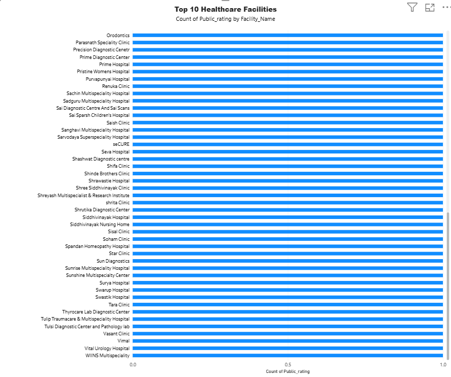
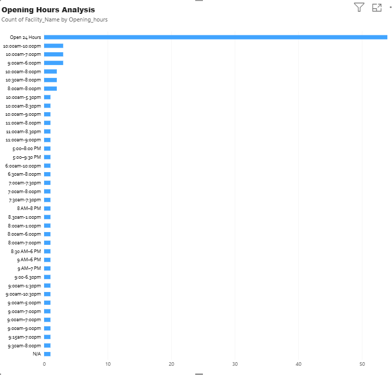
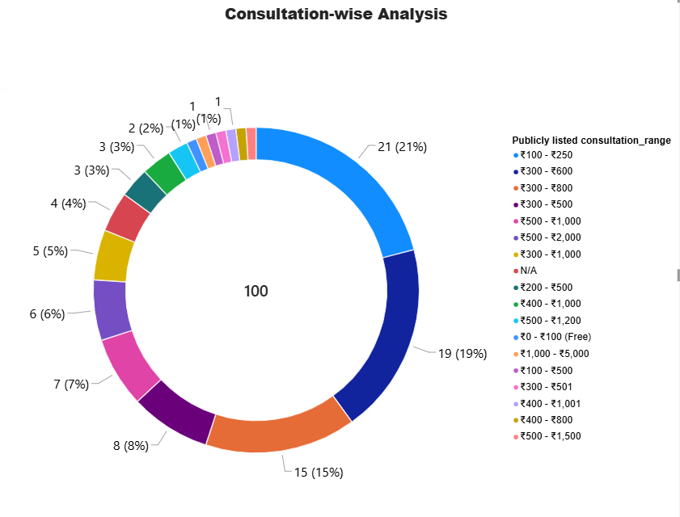
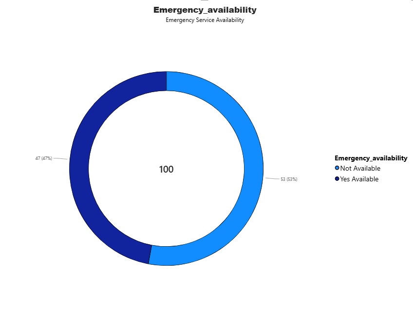
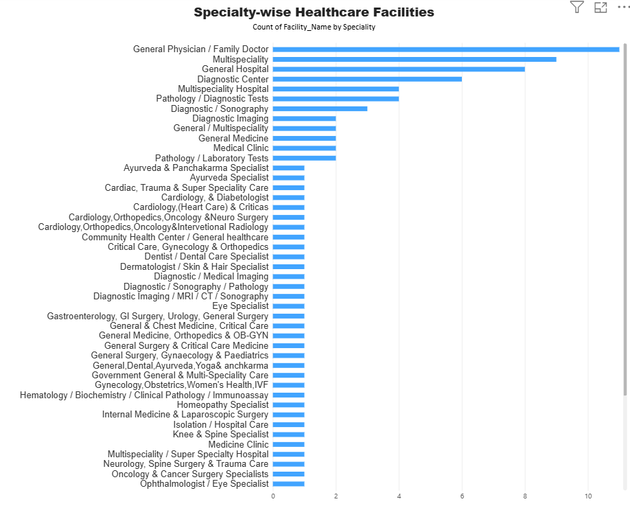
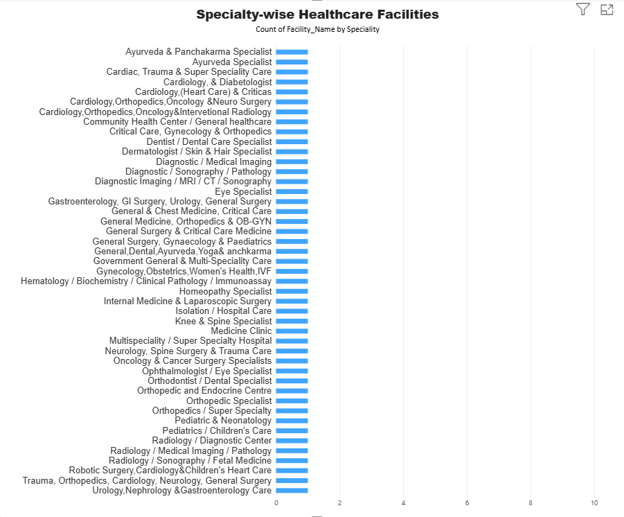
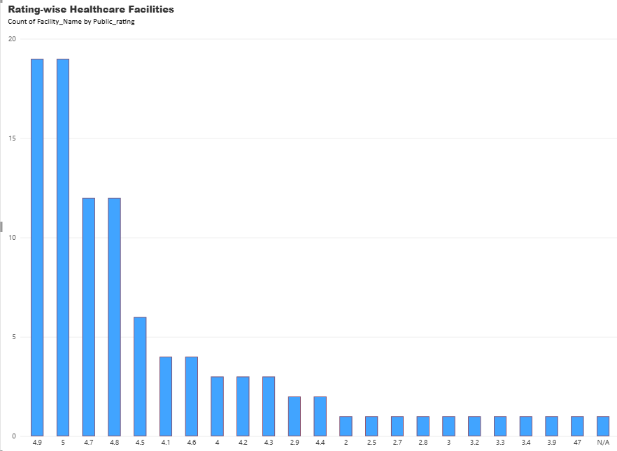

About the Project
This project examines publicly listed healthcare facility information to understand the distribution and availability of hospitals, clinics and diagnostic centers across recorded areas of Kolhapur.
The analysis covers facility types, specialties, opening hours, public ratings, review counts, listed consultation ranges and emergency availability.
Dataset Overview
Summary of the collected project dataset.
The dataset contains 100 records and 10 columns. These figures describe the collected dataset and do not represent every healthcare provider in the region.
Tools & Technologies
Excel / CSV
Dataset organization and storage.
PostgreSQL / SQL
Database queries, record counts and grouped analysis.
Python
Exploratory data analysis and analytical summaries.
Matplotlib
Charts and data visualization.
Power BI
Dashboard design and visual reporting.
Power BI Dashboard
Explore the dashboard preview created for the healthcare facility analysis project.

Power BI Chart Gallery
Select a chart to view its full-size image.









Project Files
Open the project resources stored in this repository.
Business Insights & Recommendations
- Compare facility availability across the areas represented in the dataset.
- Review the distribution of facility types and recorded specialties.
- Examine publicly listed ratings and review counts.
- Identify facilities whose emergency availability is recorded as available.
- Investigate missing service information and areas that may need further data collection.
Potential Digital Opportunities
Appointment management, healthcare directories and queue management could be explored as possible technology solutions. Further validation is needed before concluding that a specific service is in demand.